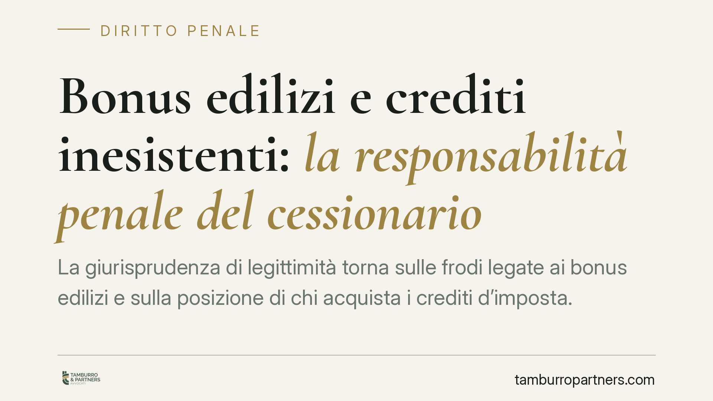

Bonus edilizi e crediti inesistenti: la responsabilità penale del cessionario
La giurisprudenza di legittimità torna sulle frodi legate ai bonus edilizi e sulla posizione di chi acquista i crediti d'imposta. Al centro ci sono il perimetro del controllo esigibile dal cessionario, la qualificazione penale delle condotte fraudolente e i riflessi della riforma del 2024 sul confine tra crediti non spettanti e inesistenti. Un quadro che impegna banche, intermediari e imprese.

Il contesto
Il mercato della cessione dei crediti d'imposta da bonus edilizi, aperto dall'art. 121 del DL 34/2020, ha generato un ampio contenzioso penale. Il nodo ricorrente riguarda la posizione del cessionario che acquista crediti poi rivelatisi privi di un reale presupposto: fino a che punto risponde di eventuali frodi commesse a monte?
Su questo terreno si attende il consolidamento di un indirizzo delle Sezioni Unite della Corte di Cassazione. Alla data di redazione, gli estremi della pronuncia (numero e anno) non risultano ancora disponibili: le indicazioni che seguono vanno quindi lette come ricognizione degli orientamenti in discussione, da verificare al momento del deposito della motivazione. Segnaleremo la massima non appena pubblicata.
Inquadramento normativo
Le condotte fraudolente in materia di crediti d'imposta vengono ricondotte, a seconda delle modalità, a diverse fattispecie. Rilevano in particolare la truffa aggravata per il conseguimento di erogazioni pubbliche (art. 640-bis c.p.), la truffa aggravata comune (art. 640 c.p.) e l'indebita compensazione (art. 10-quater del D.lgs. 74/2000). La scelta della norma applicabile non è automatica: dipende dal rapporto tra le condotte, dalle modalità di immissione del credito nel sistema e dalla sua effettiva utilizzazione in compensazione. Si tratta di un punto tecnicamente controverso, sul quale le valutazioni vanno ancorate al caso concreto.
Un ruolo centrale ha poi il D.lgs. 87/2024, che ha ridefinito la distinzione tra credito "non spettante" e credito "inesistente". In estrema sintesi: il credito inesistente manca del presupposto costitutivo (ad esempio lavori mai eseguiti); il credito non spettante esiste ma viene utilizzato oltre i limiti o in difetto di requisiti formali. La diversa qualificazione incide sul trattamento sanzionatorio e sui confini della rilevanza penale.
Implicazioni pratiche: il controllo sostanziale del cessionario
Il profilo più delicato per gli operatori è il grado di diligenza richiesto a chi acquista il credito. La tendenza interpretativa valorizza un controllo non meramente formale: non basta verificare la regolarità documentale apparente, occorre un vaglio sostanziale sulla concreta esistenza del presupposto del credito.
Per il cessionario tipo — banca, società di factoring, impresa che accetta il credito in luogo del pagamento — questo significa che l'acquisizione di crediti "a scatola chiusa", basata sulla sola correttezza cartolare, può non essere sufficiente a escludere profili di responsabilità, specie in presenza di indici di anomalia.
Diritto intertemporale
La riforma del 2024 pone un classico problema di successione di leggi penali nel tempo, regolato dall'art. 2 c.p. Occorre distinguere tra condotte anteriori e posteriori all'entrata in vigore delle nuove definizioni, valutando se la riscrittura del confine tra crediti non spettanti e inesistenti produca effetti più favorevoli per l'imputato, con conseguente possibile applicazione retroattiva. È un passaggio tecnico che va affrontato posizione per posizione.
Sul versante dei crediti per ricerca e sviluppo, resta inoltre da chiarire la natura — facoltativa o vincolante — del parere del Ministero delle Imprese e del Made in Italy (Mimit) nella qualificazione delle attività agevolabili, con riflessi sull'elemento soggettivo del reato.
Cosa fare in concreto
- Rafforzare la due diligence sostanziale sui crediti in acquisizione: non limitarsi alla verifica documentale ma indagare l'effettiva esistenza dei lavori e dei presupposti.
- Tracciare e conservare le verifiche svolte, così da documentare la diligenza effettivamente adottata in fase di acquisto.
- Mappare le posizioni critiche già in portafoglio, distinguendo tra ipotesi di credito non spettante e credito inesistente alla luce del D.lgs. 87/2024.
- Monitorare il deposito della pronuncia delle Sezioni Unite e aggiornare le procedure interne una volta nota la motivazione.
- Le posizioni più esposte richiedono un esame legale preventivo per calibrare la strategia, valutare i profili intertemporali e definire l'eventuale linea difensiva.
Il quadro è in evoluzione: la prudenza impone di trattare ogni posizione in modo autonomo, senza estensioni automatiche di principi non ancora consolidati.
---
*Contributo informativo a cura di Tamburro & Partners - Avv. Giuseppe Tamburro. Non costituisce parere legale.*
Ogni condominio ha una storia a sé.
Se gestisci un'amministrazione e vuoi un confronto su una specifica questione condominiale, scrivi allo studio. Ti rispondiamo entro un giorno lavorativo.